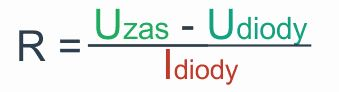
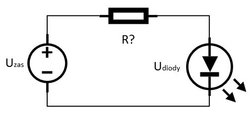

Diody LED
Diody znajdują zastosowanie w wielu projektach. Niestety nie wszyscy potrafią dobrać rezystor do LEDa lub całkiem go pomijają. Wtedy dioda może zostać uszkodzona w ułamku sekundy!
W tym artykule przedstawiamy kalkulator doboru wartości rezystancji uwzględniający napięcie zasilania oraz napięcia przewodzenia diody.
Jakie napięcie odkłada się na diodzie?
Producenci określają nominalne napięcie przewodzenia. Wartość ta będzie różna dla każdego rodzaju diody.
Jeżeli wyjątkowo nie zostało podane, bądź nie możemy znaleźć takowej informacji wystarczy skorzystać z przykładowej tabeli która zawiera bezpieczne przedziały napięcia:

Napięcie przewodzenia diod w zależności od kolorów
Zależność z którego wyliczona jest wartość rezystora:
Kalkulator doboru rezystora:
|  |
Napięcie zasilania
[V] Spadek napięcia na diodzie [V] Natężenie prądu [mA] Wyliczona wartość rezystora [Ω] |